5/7
> Inicio / Portafolio / Archivo
Ilustración &
Animación
[Ilustración]
[Concept Art]
[Desarrollo de Personajes]
[Story Telling]
[Animación]
El Archivo de Proyectos
Aquí ubiqué mis proyectos que ya hacen parte de un ‘archivo’, porque ya fueron realizados hace varios años, o porque su extensión no es significativa. No obstante, son proyectos que caben en la categoría de ilustración y fueron realizados para un cliente o un fin específico por ende hacen parte de mi experiencia profesional.
> Inicio / Portafolio / Archivo
Mundos de Fantasía
[Ilustración]
[Concept Art]
[Desarrollo de Personajes]
Cliente
> C.C. Metrópolis
Rol
- Ilustración
- Modelado 3D
Fecha
- Dic. 2016
Descripción
- Proyecto de escenografía
planteado para un centro
comercial tradicional
ubicado en Bogotá, para la
temporada navideña de
ese año.
Escenografía
De entre los varios proyectos de orden navideño en los que pude participar, éste fue uno particularmente especial para mí, parte del proyecto necesitaba un ‘background’ un fondo para una de las paredes más transitadas del centro comercial, que vendiera la idea de una ventana a un reino navideño, ahí es donde quedé a cargo de su producción de 0 a completado, en su totalidad elaborado por mí, por supuesto también estuve a cargo de su impresión.
Para la escenografía de abajo, está requirió un poco de modelado 3D para crear un render de visualización. Ése escenario fue producido para el centro comercial San Juan Plaza en Huila.
Proceso
1. Planteamiento conceptual
2. Bocetación
3. Renderizado
Fuera de un Proyecto
Fuera de un proyecto siempre está la bocetación, el dibujar y experimentar con nuevas ideas y conceptos, nutrir la imaginación con libros, películas y otros artistas, esto siempre resulta en una sana etapa de bocetación.
02
Bocetación
Como con cualquier proyecto, siempre inicio bocetando las ideas, he encontrado que éste es el método más eficaz, corta tiempos de producción, es una fase que permite muchas correcciones y no requiere una inversión de tiempo significativa que pueda afectar el proyecto; es en esta fase donde se pueden considerar las ideas más extravagantes y poder obtener resultados interesantes de ellas.
 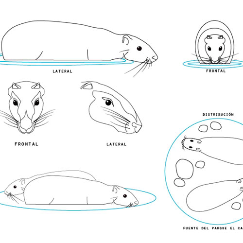
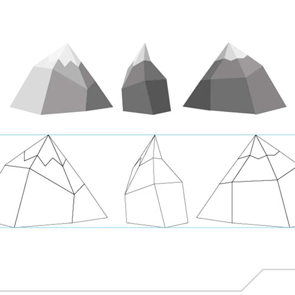
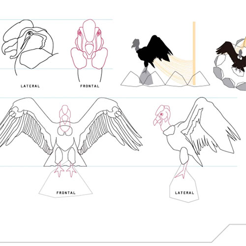
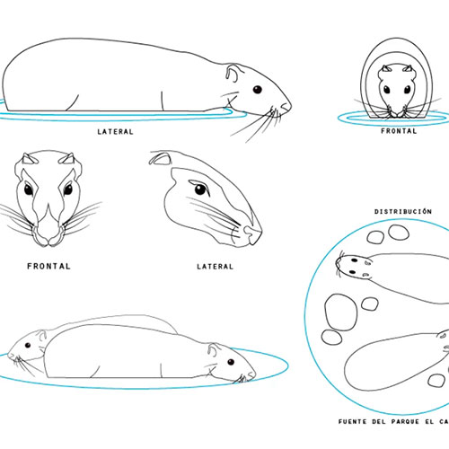
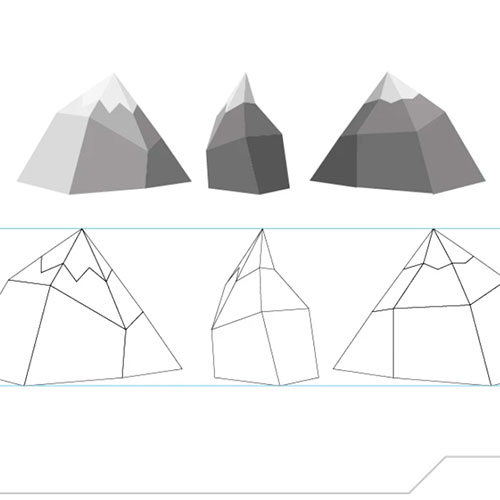
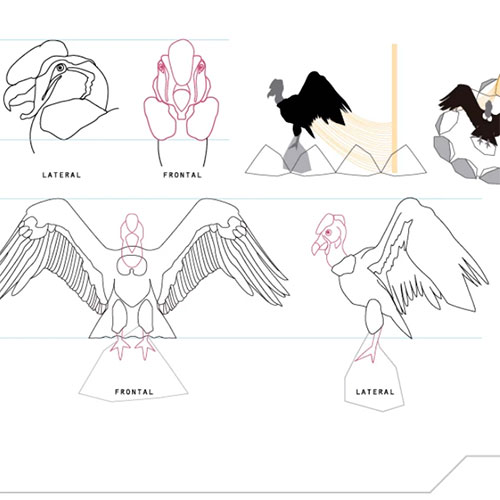

Cliente
> Persona natural
Rol
- Ilustración
- Modelado 3D
Fecha
- Mar. 2017
Descripción
- El desarrollo de un
aparato inexistente
para su posterior
visualización y
exposición en una
pequeña feria de
emprendedores.
Diseño 3D
Un proyecto notoriamente pequeño pero que acepté dado que me pondría fuera de mi zona de comfort, así tendía que darme a la tarea de realizar un modelado 3D de un objeto inexistente basándome en la visualización y las ideas del cliente.
Así, en un trabajo conjunto con la cliente se llegó al resultado deseado, presentándose a una exposición de ideas nuevas para el desarrollo de nuevas tecnologías orientadas al aporte social.
 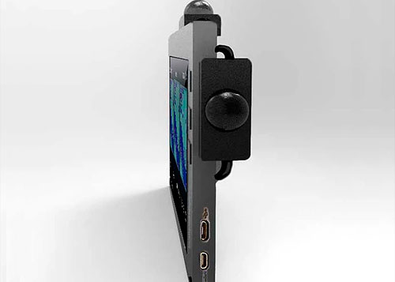
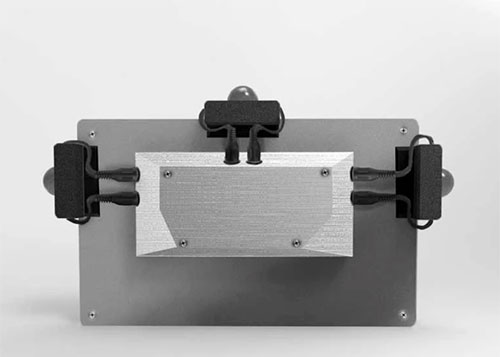
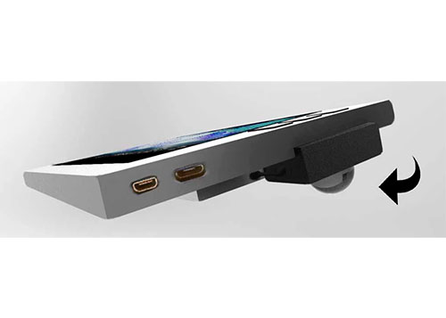
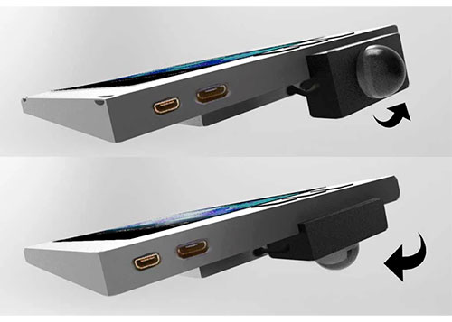
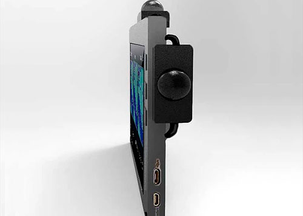
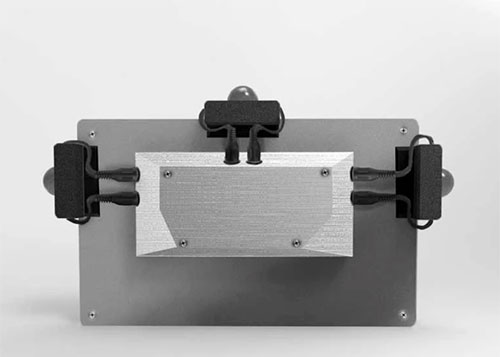
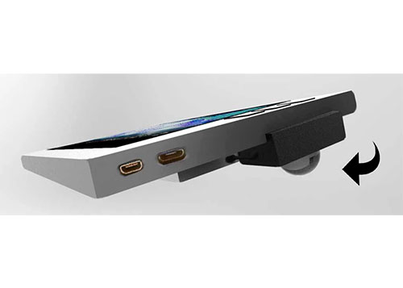
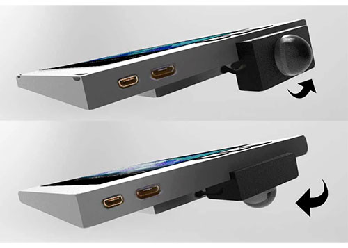
> Inicio / Portafolio / Archivo
El Estanco del Aguardiente
[Ilustración]
[Concept Art]
[Desarrollo de Personajes]
[Story Telling]
[Animación]
Rol
- Ilustración
- Modelado 3D
- Storyboarding
Fecha
- May. 2015
Descripción
- Un proyecto concebido
como trabajo final para
el diplomado de Narración
e imágen llevado a cabo por
la Universidad Jorge Tadeo
del cual me gradué contando
la historia del estanco.
Contar una Historia
El Estanco del aguardiente está concebido para ser una animación, que mientras es producida, se anima un 'teaser', o un conjunto de escenas animadas para que den una idea de cómo funciona ese universo que se está proponiendo; Ése es uno de los objetivos y con el que se empieza el desarrollo de este proyecto, el trabajo del diseño de los personajes y de escenarios.
Esta historia ideada por mí cuenta de la macabra historia del estanco del Aguardiente, sobre los fantasmas y demonios que azotan el pueblo, de cómo una pequeña niña resulta ser asesinada por haber sido testigo de algo que no debió ver. En miras de la tranquilidad de su espíritu y recuperar el pueblo, alguien contratará al mejor de los asesinos para arrancar del pueblo sus peores males.
Las ideas
Una historia macabra y gótica ambientada en el clásico western, da como resultado una amalgama de misterio con algo de violencia, de situaciones donde los crímenes son claros y su castigo es rápido y muy sencillo, la muerte.
El western es un espacio muy útil para crear rumores de vida fantasmal y de otras supersticiones, de situar personajes antihéroes como el protagonista “El del Sombrero” o de villanos muy malos como el cura Jhoseph.
La Animación
> Inicio / Portafolio / Archivo
Estocada de Madera
[Ilustración]
[Concept Art]
[Desarrollo de Personajes]
[Story Telling]
[Animación]
Rol
- Ilustración
- Concept Art
Fecha
- Sept. 2015
Descripción
- Éste es un trabajo que
nació del trabajo en equipo
para el desarrollo de su
posterior animación en el
marco del semillero de
la Universidad Jorge Tadeo.
Participantes
- Felipe Rodríguez
Diseñador Gráfico
Crear un Universo
Estocada de Madera es un proyecto planteado a manera de convertirse en un corto animado. El trabajo realizado corresponde al desarrollo de los personajes que van a ser importantes para la historia, esto es, los dos protagonistas y sus manifestaciones gigantescas.
Este universo pone en paralelo dos mundos, dos unversos y los choca para crear una amalgama muy interesante y muy llamativa, el universo de la imaginación versus el mundo real, a manos de dos niños jugando a sostener una pelea colosal; y que a juzgar por lo que se imaginan, deben tener serios problemas en sus cabezas ( :v ).
La Historia
Dos guerreros de impresionante talante se preparan para
enfrentarse el uno contra el otro, las fuerzas del bien
contra el mal, la batalla eterna; Un monje enfrentará un
diabólico guerrero, una fiera pelea que lentamente se dirige al clímax de la batalla, pero, las estocadas de madera no hieren realmente...
Dos personajes opuestos completamente entre sí, uno muy bueno y otro muy malo, son el producto de todo lo que les rodea, ley de opuestos absoluta, día vs noche, fuego vs agua, todo lo que esté a la disposición de la latente imaginación de dos niños cuya hora de juego eventualmente acabará, para comenzar otro día.
El Desarrollo
Como todo proyecto, comenzamos a realizar nuestra fase de producción con un poco de conceptualización e iteración, llegar al punto que queríamos para cómo iba a lucir el guerrero diabólico, el monje, sus manifestaciones, ¿cuáles son sus influencias?, teniendo en cuenta que todo es producto de la hiperactiva imaginación de dos niños.
Cuando el concepto está en marcha fue momento de trabajar en los detalles de la historia, cómo se iba a complicar y cómo iba a terminar, para luego avanzar a la fase de animación.